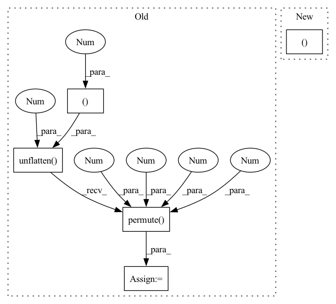

Pattern ID :33675

Before Change
// spec = self.df_op(spec, df_coefs, df_alpha)
// ic(df_coefs.shape, spec.shape)
df_coefs, _, _ = self.df_stage(feat_spec)
df_coefs = df_coefs.unflatten(1, (self.df_order, 2)).permute(0, 3, 1, 4, 2)
spec = self.df_op(spec, df_coefs, df_alpha)
return spec, m, lsnr, df_alpha
After Change
feat_erb = self.pad(feat_erb)
feat_spec = self.pad(feat_spec)
e0, e1, e2, e3, emb, c0, lsnr = self.enc(feat_erb, feat_spec)
m = self.erb_dec(emb, e3, e2, e1, e0)
// m, emb, _ = self.erb_stage(feat_erb)
In pattern: SUPERPATTERN
Frequency: 3
Non-data size: 5
Instances
Fragment ID: 96921542
Project Name: rikorose/deepfilternet
Commit Name: 5dd7650c4ec141968affd0d3594c8e41a2c89b1c
Time: 2022-04-12
Author: h.schroeter@pm.me
File Name: DeepFilterNet/df/deepfilternet2.py
M Class Name: DfNet
N Class Name: DfNet
M Method Name: forward(4)
N Method Name: forward(5)
M Parent Class: nn.Module
N Parent Class: nn.Module
M File Name: DeepFilterNet/df/deepfilternet2.py
N File Name: DeepFilterNet/df/deepfilternet2.py
M Start Line: 333
M End Line: 356
N Start Line: 346
N End Line: 372
'>
Before Change
def embed(self, x: Tensor, h=None) -> Tuple[Tensor, Tensor]:
x_gru, h = self.gru(x.permute(0, 2, 3, 1).flatten(2), h)
x_gru = self.gru_fc(x_gru).unflatten(2, (-1, self.inner_ch)).permute(0, 3, 1, 2)
x = self.gru_skip(x) + x_gru
return x, h
def decode(self, x: Tensor, intermediate: List[Tensor]) -> Tensor:
After Change
x = self.lin_emb_in(input)
x = x.permute(0, 2, 3, 1).flatten(2)
x_gru, h = self.gru(x, h)
x_gru = x.unflatten(2, (self.inner_freqs, -1)).permute(0, 3, 1, 2)
x_gru = self.lin_emb_out(x_gru)
x = self.gru_skip(input) + x_gru
return x, h
'>
Fragment ID: 96921492
Project Name: rikorose/deepfilternet
Commit Name: 94033654ad6c1ce4973b501aabc3a9715664cc19
Time: 2022-04-12
Author: h.schroeter@pm.me
File Name: DeepFilterNet/df/multistagenet.py
M Class Name: FreqStage
N Class Name: FreqStage
M Method Name: embed(3)
N Method Name: embed(3)
M Parent Class: nn.Module
N Parent Class: nn.Module
M File Name: DeepFilterNet/df/multistagenet.py
N File Name: DeepFilterNet/df/multistagenet.py
M Start Line: 437
M End Line: 439
N Start Line: 436
N End Line: 441
'>
Before Change
intermediate.append(x)
x = enc_layer(x)
x_gru, h = self.gru(x.permute(0, 2, 3, 1).flatten(2), h)
x_gru = self.gru_fc(x_gru).unflatten(2, (-1, self.inner_ch)).permute(0, 3, 1, 2)
x = self.gru_skip(x) + x_gru
return x, intermediate, h
def decode(self, x: Tensor, intermediate: List[Tensor]) -> Tensor:
After Change
for enc_layer in self.enc:
intermediate.append(x)
x = enc_layer(x)
return x, intermediate
def embed(self, x: Tensor, h=None) -> Tuple[Tensor, Tensor]:
x_gru, h = self.gru(x.permute(0, 2, 3, 1).flatten(2), h)
x_gru = self.gru_fc(x_gru).unflatten(2, (-1, self.inner_ch)).permute(0, 3, 1, 2)
'>
Fragment ID: 96921550
Project Name: rikorose/deepfilternet
Commit Name: 945221141385ce808c03235a16a5e66477f50923
Time: 2022-04-12
Author: h.schroeter@pm.me
File Name: DeepFilterNet/df/multistagenet.py
M Class Name: FreqStage
N Class Name: FreqStage
M Method Name: encode(2)
N Method Name: encode(3)
M Parent Class: nn.Module
N Parent Class: nn.Module
M File Name: DeepFilterNet/df/multistagenet.py
N File Name: DeepFilterNet/df/multistagenet.py
M Start Line: 400
M End Line: 411
N Start Line: 399
N End Line: 406